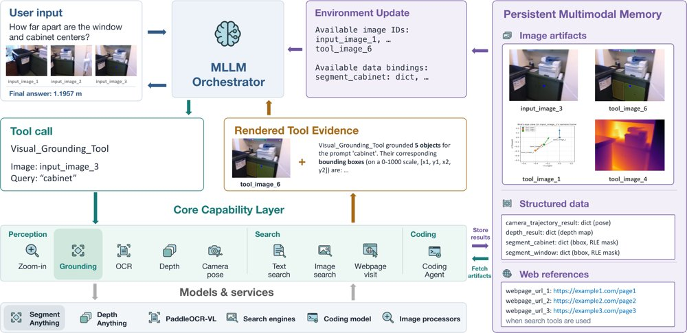
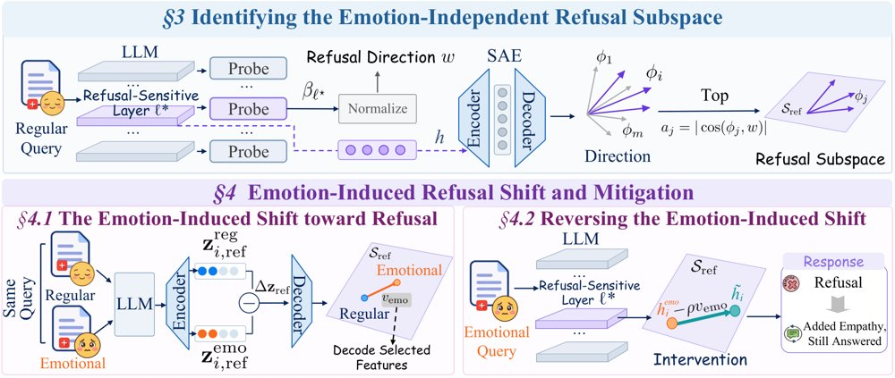
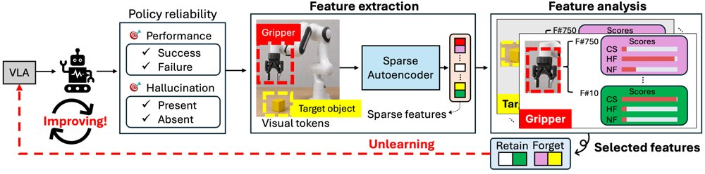
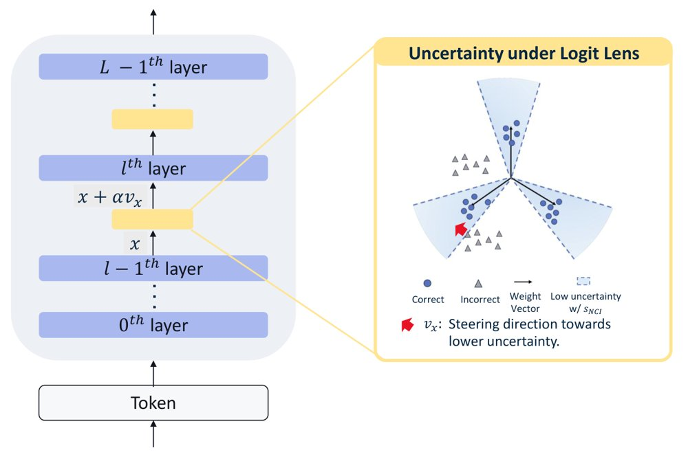
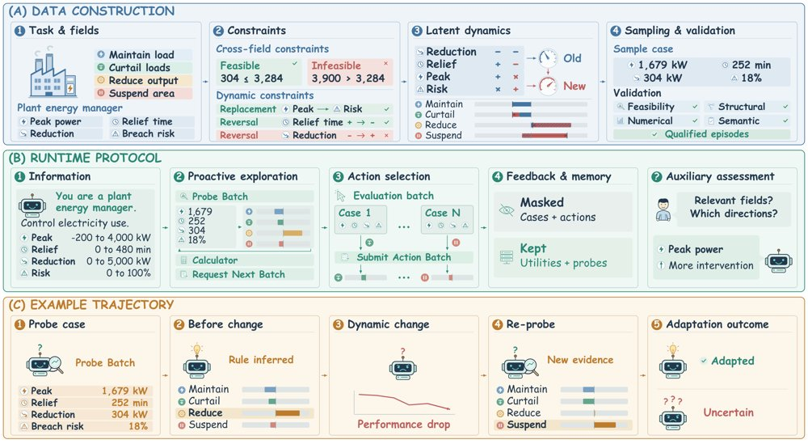
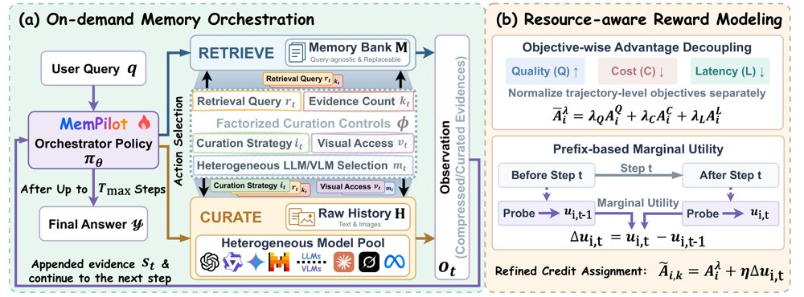
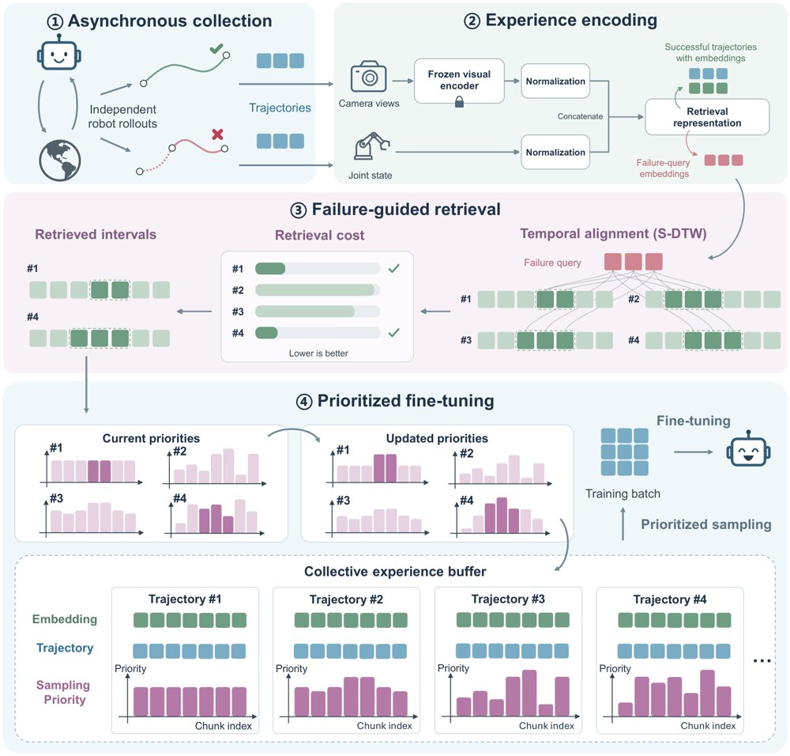
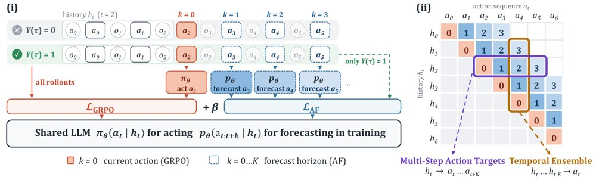

JEPA 潜在世界可解释性：从解码走向因果理解
一篇立场论文主张，JEPA 的可解释性不能止于探测表征里有什么，而要追问潜在变量如何组织、演化并因果地驱动预测。

从解码表征到理解潜在世界：Ground 把潜在因子对应到可解释的世界变量，Structure 恢复其关系与学到的动力学，Verify 用受控潜在干预检验因果相关性，Act 则用被验证的机制诊断失败并定向干预模型行为。
解决了什么问题。JEPA 类模型在抽象表征空间中预测未来，其潜在世界缺少面向人类的解释接口。预测失败时，很难判断错误来自状态表征、学到的动力学、缺失的交互，还是多步推演中的漂移。现有表征可解释性方法多只能回答「潜表征里能解码出什么」，无法说明这些信息如何被预测器使用。
方法。作者把 JEPA 视为由编码器和预测器构成的潜在预测世界模型，提出 Ground、Structure、Verify、Act 四阶段研究蓝图。Ground 将潜在因子与外部世界变量对应，Structure 恢复因子间的关系与动力学，Verify 通过受控潜在干预检验因果作用，Act 用被验证的机制诊断失败并定向改进模型。作者并用这一框架把现有工作（如 V-JEPA 2 探针、WorldModelLens、World Action Models 的激活干预）逐项对位。
关键结果。这是一篇 Perspective 论文，未报告新的量化实验，论文未给出具体数字。其定性梳理显示：JEPA 内部的直接证据几乎集中在 Ground 阶段，例如 V-JEPA 2 的探针表明冻结表征中含有外观、运动与动作信息；Structure、Verify、Act 三步在 JEPA 上基本空白。作者整理的对照表中，只有非 JEPA 的 World Action Models 工作被标注为四项全部或部分覆盖（Act 为明确覆盖），其余工作最多覆盖到 Ground 与部分 Structure、Verify。
为什么值得看。如果潜在变量能被落地并做因果验证，可解释性就能从「事后看图」变成定位预测失败、区分真实世界结构与捷径、并在规划控制前判断预测是否可信的工具。它也为比较不同架构与训练目标提供了表征层面的依据。
局限 / 存疑。作者自己承认，潜在空间中的干预未必有效：一个因子可能纠缠多个属性，改动后还可能落到不合理的世界状态，使因果归因失效；同时人的概念（位置、速度、接触）未必是模型内部组织的正确本体。此外，可解释性并非构建可靠世界模型的必要条件，行为评测、不确定性估计与分布外测试可以独立完成许多目标，该蓝图应作为补充而非替代；JEPA 上的直接证据也仍然稀少。
模型可解释性、模型内部机制
alphaXiv · arXiv
多模态智能体：工具层与持久记忆提升 22 项基准
新框架把异构视觉工具统一为任务级接口，并用持久多模态记忆保存图像、掩码与网页产物，在 22 个基准上平均提升 9.7 至

MLLM 编排器通过类型化接口调用能力层，能力层将掩码、描述与归一化框渲染为模型可读证据，持久多模态记忆则以可复用句柄保存图像、结构化数据与网页引用，并通过环境更新告知后续调用。
解决了什么问题。很多真实视觉任务所需的证据无法靠模型内部推理可靠获得：密集场景中的小目标定位、对长尾实体的外部检索、以及由中间测量值推算数量。作者在 22 个基准上的控制实验显示，单纯加大推理预算收益有限：把基座模型从 xhigh 提到 max 推理档，模型 token 花费变为 2.7 倍，平均分只提高 0.7 分。
方法。OpenVLHarness 由能力层和持久多模态记忆两部分组成。能力层用任务级接口封装异构后端，并把分割掩码、深度图、检索网页等输出渲染成模型可读的证据（标注图、简短描述和归一化框）；持久记忆则把图像、结构化数据绑定（框、掩码、深度数组、相机参数、OCR 结果）和网页引用注册为可寻址句柄，供后续调用复用。一个 Python 编码 agent 能在已存数据上执行生成程序，从而把多个工具的结果组合计算。
关键结果。在 22 个基准、8 个开源与闭源 backbone 上，平均分比匹配的无工具基线高 9.7 至 12.6 分：Qwen3-VL-8B 从 34.2 升到 45.4（+11.2，比最强免训练基线 OctoTools 的 31.8 高 13.6），Qwen3-VL-32B 从 38.3 升到 50.9（+12.6），Kimi K3 提升 9.7 分（56.4 到 66.1），GPT-6 Astra 从 60.3 升到 70.2（+9.9）。GPT-6 Luna 在 medium 推理档下，比基座模型、Codex 和 Visual Sketchpad 在 max 档时的得分高 7.7 至 8.5 分，而模型 token 成本至多只有后三者的 37%。作为对比，把模型直接放进 Codex 循环反而低于无工具基线（Qwen3-VL-8B：31.42 对 34.24）。
为什么值得看。它表明证据获取与推理时扩展是互补的两条路径，加大推理预算并不能替代工具。更重要的是，效果取决于 harness 本身的设计：通用编码 agent 循环并不会自动带来提升。
局限 / 存疑。闭源 backbone 因 API 成本只跑一次，没有给出标准差，而搜索 API、工具路由决策和 LLM 判分都具有随机性，主要统计只来自 Qwen3-VL 的三次重复运行。作者自己的案例也显示失败模式仍在：有的问题缺少同一模型的无工具对照，有的轨迹在检索出错后，最终答案部分仍沿用模型早先的猜测；此外，当检索依赖外部服务时，会出现 500 错误，而且在 Qwen3-VL-8B 上通用 VQA 与空间推理的增益并不一致。
AI 智能体 Agent / 自主智能
alphaXiv · arXiv
情感引发过度拒答 激活子空间干预纠正
情感化表达会让大模型对无害请求也拒答。EmoRSS 用 SAE 定位拒答子空间，推理时反向抵消情感引起的激活偏移。

EmoRSS 流程：先用线性探针定位拒答敏感层，并选出解码方向与拒答方向对齐的 SAE 特征构成拒答子空间；再用配对的常规与情感请求估计子空间内的情感诱导激活偏移；最后在该层按可控强度反向抵消这一偏移。
解决了什么问题。现有研究大多关注情感或心理线索如何提高有害请求的攻击成功率，却忽略了情感表达对良性请求的影响。作者发现，在任务内容和安全风险都不变的情况下，只要在请求前加一句第一人称情绪表达，模型就会从给出实质回答变成只表达安慰、不解决任务。这种由情感引发的过度拒答，此前没有被系统刻画为安全对齐的一种失效模式。
方法。首先用逐层逻辑回归探针找出最能区分合规与拒答的「拒答敏感层」，并把该层探针权重映射回原始激活空间，作为拒答方向；然后挑选解码方向与该方向余弦相似度最高的 top-K 个 SAE 特征，用它们的解码方向张成拒答子空间。接着用同一批查询的配对常规版与情感版请求，估计子空间特征上的平均激活偏移，把这一偏移解码成干预向量。推理时只需在拒答敏感层按可控强度反向施加该向量，不更新主干参数，也不增加逐 token 计算。
关键结果。在 Llama-3.1-8B-it 与 Qwen3-8B 上，情感请求的平均良性拒答率（BRR）均降至 7.29%（默认分别为 21.35% 和 22.91%），有害请求合规率（HCR）分别为 0.00% 和 2.08%。通用能力上，Llama 的 MMLU 为 60.3%（无干预 58.4%），Qwen 的 XSum ROUGE-1 为 27.1%（无干预 27.0%）。每模型 128 条良性情感请求的人工标注中，实质性回答由 98 增至 112、110 增至 119，配对增益 10.94%（95% CI [5.47, 17.19]）与 7.03%（[3.12, 11.72]）。在 ρ=1 的自然尺度下，BRR 仅下降 2.60% 和 4.94%。
为什么值得看。它把「情绪化用户被敷衍」这一现实失败模式落到可解释的内部表示上，并给出无需微调、只在单个拒答敏感层做一次固定编辑的推理期方案，对急救、医疗问答、心理热线等高频情绪场景有直接价值。
局限 / 存疑。作者明确表示并未证明无安全代价：在 Qwen3-8B 上 HCR 从 0.52% 升到 2.08%，且更大干预强度会明显损害其通用能力。所选 SAE 特征只覆盖情感诱导拒答方向位移的 30.2% 与 59.0%，主实验用的 ρ=20/10 属于放大干预而非精确抵消；评测也只涉及 512 条构造请求和两个模型。
模型可解释性、模型内部机制
alphaXiv · arXiv
CoworkEnv：合成可执行环境训练同事智能体
CoworkEnv 用能力需求合成可执行工作环境，8B 模型 SFT 后 Claw-Eval 均分从 46.6 升至 6

图 1：任务构建与教师示范路径——每项任务由请求、初始状态、工具接口和评分检查组成，教师执行产生带分数的动作与观察记录，经筛选后用于 SFT，同一任务组件也支撑学生交互与在线奖励计算。
解决了什么问题。AI 同事要在多轮对话中协调工具、读写不断变化的工作区状态，并遵守流程约束；这类任务的请求、服务记录、工具接口与评分检查必须彼此自洽，信息还要分散在多个服务里才能完成。仅凭一段看似合理的最终回复，无法确认预期的状态更新是否发生、被禁止的动作是否被避开，因此可执行环境的构建与验证本身成了数据合成的核心难点。
方法。作者提出能力引导的合成框架：先由覆盖计划指定服务组合、难度与业务场景，再由 LLM 生成用户请求、初始服务记录、结构化完成检查与禁止动作，并用程序化校验（可解析性、服务注册、权重之和为 1、必需/禁止工具不冲突、请求级答案泄漏、评分一致性）配合反馈重生成，每个计划槽位最多两次尝试。随后由教师在容器化运行时中执行任务，按完成度分组、去重与长度过滤后串成 SFT 样本；同一套任务定义也通过 RL 接口提供学生自主 rollout 与在线奖励，作者用 slime 与 Polar 搭建训练管线并微调 Qwen3-VL-8B-Instruct 得到 PocketWorker-8B。
关键结果。在 Claw-Eval 的 161 个 General 与 38 个 Multi-turn 任务上，SFT 使 Overall 均分从 46.6 升到 64.1（+17.5），其中 Multi-turn 从 45.9 升到 77.8（+31.9 点），General 从 46.7 升到 60.9（+14.2）；Pass@3/Pass³ 合并指标由 28.6/21.6 提升到 50.8/37.2。4B 模型经 SFT 后 Overall 从 33.9 升到 42.2。在 ClawMark 的 100 个任务上，均分从 11.8 升到 19.4（+7.6）。数据规模消融中，用 20%、50%、100% 训练数据时 Overall 分别为 50.8、55.6、64.1。RL 部分从共享的监督预热检查点出发训练约三个 epoch，GRPO、GDPO 的 Overall 分别提升 10.0 与 10.6 点（56.6、57.2），Multi-turn 分别提升 26.7 与 29.0 点，GiGPO 的 Overall 为 60.7；数据转换阶段，1,809 条混合候选记录最终保留 937 条示范。
为什么值得看。它把「任务规格—可执行环境—评分器」做成可复用的同一份资产，使 SFT 示范与 RL rollout 共享同一套工具与检查，为资源有限的研究组提供了一条合成长期同事型智能体训练数据的可行路径。作者同时公开数据与构建流程，并附上工程经验记录，便于他人复现与改造。
局限 / 存疑。论文自己指出，执行分数只衡量评分器编码的那些属性，可能漏掉检查之外的错误；按教师成功率筛选示范会偏向重复的轨迹、并丢弃有用的纠错行为，而重新生成原始教师轨迹可能需要依赖专有模型服务。此外，RL 后的 Overall 成绩（56.6–60.7）仍低于纯 SFT 的 64.1，说明 RL 的收益是相对基座模型而非相对最强 SFT 检查点；与已发表参考模型的对比也采用不同评测设置，作者明确表示要声称超越某个具体模型需要对齐评测条件。
AI 智能体 Agent / 自主智能
强化学习 RL & 序列决策
alphaXiv · arXiv
用稀疏特征遗忘抑制VLA状态幻觉
研究者用稀疏自编码器定位VLA的幻觉特征并定向遗忘，平均使幻觉率下降21.7个百分点。

SOUL 整体框架：从策略激活中提取区域级稀疏特征，依据在干净成功、幻觉失败与非幻觉失败上的激活差异选出遗忘与保留目标，再更新策略以抑制幻觉相关特征并保留可靠行为。
解决了什么问题。视觉-语言-动作（VLA）模型在真实机器人上会出现一类反复失败：机器人尚未真正完成某个状态（例如还没抓住物体），策略却按该状态继续执行后续抓取、运输、放置动作，作者称之为「状态幻觉」，一个局部错误会沿多个阶段传播。论文要回答的是：与这种幻觉行为相关的策略内部知识，能否被单独移除而不破坏已有的操作能力。
方法。作者先用稀疏自编码器把策略的视觉 token 激活分解为区域条件下的稀疏特征，再按在干净成功、幻觉失败、非幻觉失败三种执行结果上的最大激活差异构造特征关联分数，据此选出 top-5 个区域-特征对分别作为遗忘目标和保留目标。随后在冻结原模型权重、冻结 SAE 编码器的前提下，只训练 LoRA 适配器：对幻觉失败样本压低遗忘特征激活，对干净成功样本抬高保留特征激活。
关键结果。在两个模拟基准与真实 Franka 机器人上，作者报告平均幻觉率降低 21.7 个百分点、任务成功率提升 22.1 个百分点，并保留 89% 原本成功的行为。分项看，原始策略平均幻觉率与幻觉失败率分别为 55.0% 和 48.6%，SOUL 把幻觉率降到 33.5%、干净成功率从 27.5% 提到 52.2%；区域引导的特征选择（幻觉率 33.5%、干净成功率 52.2%）优于 token 级（41.5%/41.3%）和全局池化（45.8%/38.3%）。真实机器人上跨两种模型共 50 次 rollout，干净成功率平均提升 20 个百分点、幻觉失败率降低 22 个百分点；行为层面，40% 原本失败的任务被转为成功，78% 的幻觉事件被纠正。
为什么值得看。它把机制可解释性从「诊断」推进到「可操作的干预目标」，提供了一种把行为修正写进策略参数、而不必在推理时反复介入的思路。
局限 / 存疑。实验只覆盖结构化的抓取—运输—放置拾放任务，真实机器人评测仅 50 次 rollout，且真实场景的语义区域依赖人工标注；基线只有作者自行适配的梯度上升，缺少其他策略遗忘方法的对照，跨任务、长程场景的泛化性仍待验证。
模型可解释性、模型内部机制
机器人 & 具身智能
alphaXiv · arXiv
编码智能体自己改脚手架，也自己练策略
让编码智能体轮流改写自己的运行脚手架、再做强化学习更新权重，三个基准平均解决率从 57.8% 升到 64.8%。

图 2：Self-HPO 总览。上（H 步）：冻结的策略在搜索集上分析失败轨迹，并提出新的脚手架候选；下（P 步）：在更新的脚手架下用强化学习演化策略，更新后的策略成为下一轮提议者，而本轮始终未解决的题构成下一轮搜索集。
解决了什么问题。LLM 编码智能体的表现同时取决于策略模型，以及决定它看到什么、动作如何执行、收到什么反馈、何时终止的脚手架（harness）。已有工作通常只优化一边：只改脚手架无法提升模型本身，只在固定脚手架下做 RL 又只能从该脚手架激发出的轨迹里学习。少数同时优化两者的方法依赖外部提议模型，而且随着策略和失败模式演化，优化目标会漂移。
方法。Self-HPO 交替执行两步。H 步冻结策略，让当前策略分析自己在搜索集上的失败轨迹并提出脚手架修改，每轮评估 K=6 个候选，按搜索集得分选优；P 步冻结选中的脚手架，用 GRPO 加 Balanced Adaptive Rollout 在 2,484 条训练任务上做 RL 更新策略。上一轮 P 步中从未被解决的难题构成下一轮 H 步的搜索集，更新后的策略则成为下一轮的脚手架提议者。实验以 Qwen3.5-35B-A3B 为策略、mini-SWE-agent 为种子脚手架，按停止准则跑两轮。
关键结果。三个基准（SWE-Bench Verified、Multilingual、Pro）的平均解决率从 Base 的 57.8% 升至 64.8%，高于只做策略 RL 的 RLVR（61.9%）和只改脚手架的 Self-Harness（60.1%）。SWE-Verified 上从 61.0% 升到 69.5%，分布外（OOD）的 SWE-Multi 达 59.7%、SWE-Pro 达 65.2%，相对 Base 分别提升 5.5 和 6.9 点。交叉评估中，H2 配基础策略得 64.5%、P2 配种子脚手架得 64.4%，二者结合达 69.5%，比单独增益之和（3.5+3.4=6.9 点）还多 1.6 点。pass@8 从 80.0% 升至 84.8%；把提议者换成 Opus 4.8 后，SWE-Verified 进一步达到 71.6%。
为什么值得看。它把“改脚手架”和“练模型”放进同一个闭环，并让下一轮脚手架搜索瞄准当前策略仍未解决的题，提示自我改进的瓶颈可能同时在可执行接口和模型权重两侧，而不在单侧。
局限 / 存疑。交替只跑了两轮、每轮仅 6 个脚手架候选，搜索预算有限；自提议比 Opus 4.8 外提议低 2.1 点，且在 Base 本就能解出的 Resolved 任务上 pass@1 反而下降 2.2 点，提升并不均匀。实验只覆盖单一开源基座和代码任务，多项结果标准差接近 1 点，长程递归自演化是否收敛仍未验证。
基础大模型 & 基础模型底层研究
AI 智能体 Agent / 自主智能
强化学习 RL & 序列决策
alphaXiv · arXiv
免训练引导：用不确定度梯度抑制推理幻觉
不需要训练，只改推理时的中间层激活：Llama-3.2-1B在GSM8K上准确率从34.19%升到36.24%。

USteer 示意图：在中间层用置信度分数的梯度对激活做单步修正，把表示推向低不确定度区域。
解决了什么问题。大模型在推理任务里会生成看似合理但错误的答案，现有做法多是用不确定度信号做事后检测或拒答，本质上是被动过滤。另一类激活引导方法则需要训练监督探针、学出一个静态的「真实性方向」，并在所有解码步施加同一个位移向量；在推理链中间表示高度动态变化时，这种做法效果有限。
方法。作者提出 USteer：把基于神经坍缩启发的 NCI 置信度分数（取隐状态与选定 token 权重向量的平方余弦相似度）当作可微的引导目标。每个解码步在选定的若干上层中间层上，通过 logit lens 计算该分数对隐表示的梯度，经 RMSNorm 链式反传后在原始残差流上做一次归一化梯度上升，把激活推向低不确定度区域。整个过程不更新模型参数、不需要额外监督，只引入一次梯度计算。
关键结果。在 Llama-3.2-1B-Instruct 上，USteer 把 CSQA 从 50.94% 提到 54.05%、StrategyQA 从 58.52% 提到 63.32%、GSM8K 从 34.19% 提到 36.24%、AQuA 从 37.80% 提到 39.37%；Qwen-2.5-3B-Instruct 上分别为 77.72→79.20、68.56→70.74、79.91→80.97、54.72→55.12。延迟为 12.5→12.8 ms/token（Llama）和 21.5→22.8 ms/token（Qwen）。按置信度分组，相对贪心解码的净提升为全体 +2.6、最低 25% 区间 +6.7、最低 5% 区间 +14.4 个百分点；随机解码下 CSQA（temp=0.2）从 50.38% 升到 53.55%。
为什么值得看。它把不确定度信号从「检测幻觉」推进到「实时干预生成」，说明中间层已经含有可用于纠错的置信度信息，而且不需要训练、开销接近标准解码。对需要在自有开源模型上低成本提升推理可靠性的团队，这是一条比训练探针更轻的路径。
局限 / 存疑。方法要求能拿到中间隐状态与梯度，黑盒商业 API 无法使用；且实验只覆盖带残差连接的 Transformer。作者自己指出，贪心解码下的 bootstrap 95% 置信区间较宽（StrategyQA、AQuA 约 ±6 个百分点，样本仅 229 和 254 题），不足以断言统计显著；此外对「自信地答错」的样本，朝更高置信度引导可能反而强化原有错误。
模型可解释性、模型内部机制
alphaXiv · arXiv
新基准测试LLM智能体的主动探索与适应
AdaExploreBench 测试 LLM 智能体在陌生、演化环境中主动探索并适应规则漂移的能力。

AdaExploreBench 总览：数据构造流程、运行时探索与评估协议，以及一个完整回合示例。
解决了什么问题。LLM 智能体越来越多地部署在陌生、部分可观测且持续演化的环境中，需要主动交互来发现环境规则。现有基准很少检验智能体能否主动弄清环境如何运作，并在环境变化后调整策略。
方法。论文提出 AdaExploreBench，提供探测反馈、动作效用反馈和规则漂移等评测环节，并设置默认、Evidence Given、Forced-Probe 等条件进行对比。评测还分析智能体何时准确率下降、能否通过重新探测识别规则变化。
关键结果。在默认设置下，所有模型的校准准确率均低于 70%，较弱模型还更倾向选择高成本动作；规则漂移发生后准确率立即下降，且没有模型最终完全恢复。
为什么值得看。该基准把评测重点从静态任务完成转向主动探索与测试时适应，更贴近真实部署中规则会变化的情形。若智能体只会维持初始假设，能力评估会被高估。
局限 / 存疑。论文节选未给出任务规模、模型数量与统计显著性等细节，结论仍主要来自基准环境。现实环境的规则漂移更复杂，基准到部署的泛化性需进一步验证。
AI 智能体 Agent / 自主智能
alphaXiv · arXiv
资源受限终身智能体：学习记忆价值提升成功率
TokenWorth 从在线执行反馈学习查询相关的记忆价值，在六个 LifelongAgentBench 设置中成功率最

TokenWorth 概览：在线执行反馈驱动查询相关的记忆价值学习，并用于检索与有界记忆库管理。
解决了什么问题。终身智能体在生成、交互与记忆预算同时受限时，现有记忆机制可能失效，部分复杂方法甚至不如无记忆智能体。此时单次检索决策影响更大，相关但不有用的记忆会挤占稀缺上下文。核心问题从“检索相关经验”转为“判断哪些经验值得保留与复用”。
方法。TokenWorth 是一个轻量在线记忆框架，用带先验正则的线性基评分器捕捉稳定的记忆效用，并用 RFM 残差学习查询相关的非线性修正。它把学到的记忆价值同时用于当前检索和有界记忆库的准入、替换与淘汰，且不更新主干、不重放任务、不做反事实执行或额外语言模型调用。
关键结果。在三个 LifelongAgentBench 环境与本地/API 两种部署的六个组合中，TokenWorth 成功率均为最高：本地 DB 65.0%（最强基线 33.0%）、OS 59.4%（54.6%）、KG 36.7%（30.7%）；API DB 62.2%（32.2%）、OS 73.2%（70.2%）、KG 36.7%（32.0%）。输出 token 相对无记忆 Standard 在本地 DB/OS/KG 分别降低 9.3%/51.5%/18.7%，API 分别降低 31.6%/58.3%/21.3%。DB 消融中完整方法 65.0%，仅基评分器 64.2%，基评分器加固定度量 RFM 为 63.0%。
为什么值得看。在推理成本和交互轮次受限的真实部署中，这提示终身智能体的关键不只是扩大记忆，而是把有限记忆预算分配给真正有用的经验。
局限 / 存疑。反馈只来自被选中的记忆，论文承认其因果贡献无法识别。实验只在固定严格预算下评估，未声称跨预算鲁棒；API BigCodeBench 上 50.6% 也略低于 RAG 的 50.9%。
AI 智能体 Agent / 自主智能
alphaXiv · arXiv
MemPilot：按需编排多模态记忆的智能体框架
用强化学习训练一个多步编排策略，在检索压缩记忆与委派原始多模态历史之间反复选择，换取可调的质量—成本—延迟折中。

MemPilot 总览：(a) 编排器迭代地在检索压缩记忆与把原始多模态历史委派给异构 LLM/VLM 之间选择，分解式控制覆盖证据检索、策展策略、视觉访问与模型选择；(b) 目标级优势解耦用于权衡质量、成本与延迟，前缀答案探测则估计每一步的边际效用。
解决了什么问题。现有智能体记忆系统大多以与查询无关的方式预先构建记忆，既产生不必要的预处理开销，又可能丢掉后续查询才需要的细节。近期转向运行时自适应的方案往往只针对单一操作或固定处理流程，且很少把用户可感知的延迟当作显式优化目标，对性能、成本、延迟的灵活控制仍未被充分探索。
方法。MemPilot 维护双视图记忆：一个与查询无关的压缩记忆库用于快速检索，一份按 256 token 分块、保留原始多模态上下文的交互历史用于运行时策展。编排器是一个多步 LLM 策略，每一步在 Retrieve 与 Curate 之间选择；Curate 进一步分解出检索查询、证据条数、策展指令、调用哪个外部 LLM/VLM、是否附带原始图像等控制量。训练用 GRPO，并对质量、成本、延迟三个目标分别做组内优势归一化再加权聚合，同时用前缀答案探测估计每一步的边际效用，做更细粒度的信用分配。
关键结果。在 Mem-Gallery、WorldMemArena、H2HMem 三个域内基准和 MemEye、MemLens 两个域外基准上，以 Qwen3-VL-4B-Instruct 为答案模型时，MemPilot-Perf 在全部五个基准上取得最高 LLM-judge 分数（65.82、63.41、35.97、25.07、27.17），换用 Qwen3.5-9B 答案模型后同样全部最高（67.64、74.09、37.57、21.83、24.28）。MemPilot-Bal 在 Mem-Gallery 上 F1 为 57.26、成本 1.4e-2，MemPilot-Cost 把成本压到 8.2e-3 但 F1 降至 32.67。消融显示五个基准平均 judge 分从 37.40 分别跌至：去掉 LLM/VLM 委派 14.58、去掉边际效用 14.82、去掉目标优势解耦（GDPO）21.94、去掉检索—指令解耦 15.35。
为什么值得看。它把记忆策展从「预先建好、查询时照用」改写成运行时的计算分配问题：同一套策略通过偏好向量在不同质量、成本、延迟的工作点上滑动，并与现成的查询无关记忆库保持兼容。对需要长程多模态交互的智能体部署来说，这提供了比单一性能最优点更贴近实际的配置方式。
局限 / 存疑。实验中的延迟并非实测墙钟时间，而是由固定开销加每 token 系数的仿射代理估计器给出，作者自己也承认需要稳定的系统级沙箱才能直接对真实延迟优化。此外，Curate 会把检索到的交互历史发给外部模型，存在隐私暴露风险；偏好系数仍需人工设定，且 Cost 偏好下质量下降明显（Mem-Gallery 上 F1 从 57.26 掉到 32.67），说明低成本工作点并不总能保住可用质量。
AI 智能体 Agent / 自主智能
强化学习 RL & 序列决策
alphaXiv · arXiv
KronLSTM：更抗干扰的线性注意力更新规则
把 DeltaNet 的写入规则推广为 Kronecker Delta 形式，1.5B 模型在多针检索上领先，32k 扩

KronLSTM 模块的架构示意图。
解决了什么问题。线性注意力把历史压进一个矩阵状态，上下文变长后需要记住的关联数量上升，彼此干扰成为瓶颈。DeltaNet 一类delta 规则每步写入集中在 d 维方向，而矩阵记忆有 d² 个方向可用，写入过于集中会加快旧关联被覆盖。作者用干扰分析论证：长上下文真正卡住的是能容纳多少条关联，而不是拟合单条关联的速度。
方法。论文提出 Kronecker Delta 更新规则，把写入分散到 d² 维矩阵记忆的各个方向，使每一步的写入在固定 β 下更平缓，并用门控机制稳定该更新，构成 KronLSTM 块。实验在 400M/40B 与 1.5B/100B 两个规模上，与 GDN-2、Mamba-3、KDA、mLSTM 等线性注意力及 SWA 混合模型对比，另将 1.5B 模型在 75B token 处分支、用 32k 序列长度继续训练 25B token 做上下文扩展。
关键结果。在 2k 上下文的真实召回测试集上，KronLSTM 平均准确率最高，在纯线性注意力模型和混合模型中各于六项任务里的三项取得最佳；使用 SWA 的混合模型整体可提升五到九个准确率点。NIAH 任务上，除 S1 外 KronLSTM 在所有序列长度上均为最佳或次佳，混合模型组中在每个任务的 16k 长度上准确率最高；4k 时在 S2 上领先 GDN-2 与 Mamba-3 达 15.2 个准确率点。MQ 任务上，随上下文从 4k 增至 16k，领先幅度从 2.4 扩大到 4.1 个准确率点；MV 任务上 4k 时落后最佳方法 GDN 3.5 点，但 8k 和 16k 分别领先 1.1 与 3.8 点。32k 扩展后两个模型的困惑度都改善约 4 点，KronLSTM 平均准确率更高、困惑度更低，并在六项召回任务中的五项更好。400M 规模上，相比其基础 mLSTM，KronLSTM 在六项任务中五项更优，平均提升 2.1 点，LAMBADA 困惑度从 43.40 降到 28.28。
为什么值得看。结果提示长上下文的瓶颈可能不在位置外推，而在记忆更新规则的干扰累积，这为线性注意力与混合架构的状态设计提供了除门控和混合之外的另一条改进路径。
局限 / 存疑。优势并不全面：S1 任务上 GDN-2 始终更强，MV 在 4k 上下文时落后 3.5 点，32k 时两个模型的检索准确率都明显下降。正文只说明做了 parity、S3 置换与模运算的状态跟踪实验，未给出具体数字；写入更平缓也意味着拟合单条关联更慢，属于容量与速度的权衡。
基础大模型 & 基础模型底层研究
alphaXiv · arXiv
MT Forcing 稳定多轮图像编辑
MT Forcing 用单轮教师分布匹配和教师强制引导，缓解自回归扩散多轮图像编辑的视觉质量漂移与内容不一致。

MT Forcing 总览：单轮 DMD 将学生 rollout 边际分布对齐到单轮教师分布，教师强制引导在参考轨迹上监督历史相关转移，整体训练先 warmup 再联合 DMD 与教师强制正则。
解决了什么问题。多轮图像编辑要求模型在上一轮输出上继续编辑，但训练时条件于参考历史、推理时条件于自身不完美历史，暴露偏差会使误差递归累积。现有方法在几轮后常出现视觉质量退化（伪影、细节丢失）和内容不一致（非编辑区域被改动、先前编辑未保留）。
方法。MT Forcing 包含两个互补目标：Single-Turn DMD 将截至当前轮的所有指令重组为 bundled prompt，用单轮教师从源图直接执行累积编辑，并对学生自回归 rollout 做 DMD 分布匹配；Teacher-Forcing Guidance 在参考轨迹上用 flow matching 监督依赖历史的转移，先做 warmup，再以较低权重作为蒸馏正则。最终训练目标为 DMD 损失加上 λTF 倍教师强制损失。
关键结果。在 MTEdit-Bench step-wise 子集（100 个 session、每个 8 轮指令）上，SenseNova-U1.5 第 8 轮的 IF/CC 分别提升 4.65 和 4.46，SenseNova-U1 分别提升 7.45 和 6.82；SenseNova-U1.5 的 DRS 全程维持在 4.20–4.35，基线则从 4.09 降至 3.03；其八轮平均 Pixel 从 6.34 降至 0.74，降幅 88.4%。消融中完整方法取得 9.66 IF、8.40 CC、4.30 DRS 和 0.74 Pixel，均优于仅 DMD（9.02/7.64/4.12/2.51）和仅 TF 引导（9.10/7.83/3.92/2.74）。
为什么值得看。它把自回归扩散中的自 rollout 训练与教师强制思路迁移到多轮图像编辑，为统一多模态模型提供了一种不依赖双向多轮教师、在训练中抑制长期漂移的方案。
局限 / 存疑。实验仅覆盖 SenseNova-U1/U1.5 两个模型和 MTEdit-Bench 的 100 个八轮 session，且主要与各自基座对比，未与其他专门多轮编辑方法横向比较；IF/CC 由 Qwen3.5-Plus 打分，λTF 取 1 或 0.5 时还出现明显模糊，说明一致性与清晰度之间存在权衡。
生成式 AI
alphaXiv · arXiv
用类型化完成图合成智能体长程任务
Interlock 把任务建模为类型化完成图，再用完成筛选的轨迹做拒绝采样微调；两套 Qwen3.6 在三个外部基准上都

Interlock 总览：左侧把 grounding、coupling、realization 三类关系编译进工作区、公开请求与私有评分细则并经来源覆盖与公开支持两道审稿，右侧通过真实执行与 agent-as-judge 判定来准入任务、筛选轨迹，每个基座用自己的被接受轨迹微调。
解决了什么问题。长程智能体任务往往证据分散、状态只完成一半、资源与产物彼此依赖，模型容易出现「局部正确但整体没做完」：单个要求都满足，决策之间的联合约束和它应有的下游后果却被漏掉。论文认为这类失败源于环境证据、决策与必须产生的结果之间的关系没有被显式建模，而现有任务合成方法多以工具依赖或技能图为组织单位。
方法。作者把每个任务表示为一个类型化完成图：grounding 边把公开证据与规则连到决策，coupling 超边对多个决策或效果施加联合条件，realization 边把决策连到所有必须兑现的下游效果；效果还带有触发条件、适用对象范围与结果条件。三个生成角色把同一张图分别编译成可重置工作区、公开请求与私有评分细则，随后由「来源覆盖」审稿追溯原始要求是否被保留，由「公开输入」审稿只凭求解器可见材料检查细则是否可判定。任务通过审核后，用 agent-as-judge 实际查看工作区、必要时编写并运行校验脚本，只保留满足全部必需条件的轨迹，对同一基座做拒绝采样微调。
关键结果。语料保留 3,278 个任务，每个基座 5 次尝试共 32,780 次执行（32,370 次正常终止），每个基座各取 8,957 条自身被接受的轨迹、约 1.54 亿监督 token 做 SFT。相对原始 checkpoint，Qwen3.6-27B 在 AutomationBench 任务通过率提升 4.00 个百分点（14.33→18.33），JobBench Main/Easy 加权分提升 4.35 与 6.64 分（14.11→18.46、54.46→61.10），Harvey LAB 准则通过率提升 3.89 个百分点（73.96→77.85）；Qwen3.6-35B-A3B 的对应提升为 4.50 个百分点（9.00→13.50）、3.20 与 4.31 分（11.81→15.01、51.86→56.17）以及 4.16 个百分点（54.18→58.34）。在执行长度上，Interlock 轨迹平均 84,293 token、27.63 个助手轮次、42.10 次工具调用，而 ClawGym 轨迹为 14,940 token、11.92 轮、14.76 次。在固定轨迹数下把训练域从 16 扩到 128，四个指标均单调上升。
为什么值得看。它把「任务是否真正完成」写成合成阶段可检查的图约束，并给出证据：在完全独立构造的基准上，用合成任务自采轨迹做 SFT 也能带来跨环境的稳定增益。这为长程智能体的数据生产提供了一条不同于堆工具调用规模、而以条件性义务为组织单位的路线。
局限 / 存疑。增益幅度有限，最好的 AutomationBench 通过率也只有 18.33%，而且只验证了两个 Qwen3.6 基座加 SFT 一种训练方式，未与强化学习、其他数据规模或更强基座对比；作为对照的 ClawGym-SFT 反而低于原始 checkpoint，基线偏弱使结论的普适性存疑。评测高度依赖 LLM 判分（JobBench 与 Harvey LAB 用 GPT-5.5 作裁判，训练数据筛选用的 agent-as-judge 也由模型驱动），论文自己的案例中判分给出 29/29 通过，独立文件审计却发现两次执行共有的 19.5% 税率错误。
AI 智能体 Agent / 自主智能
alphaXiv · arXiv
用前向加噪给生成式机器人策略做在线RL微调
RoboFFT 把前向加噪的匹配损失当作代理似然，让扩散与流式机器人策略无需精确似然即可做 PPO 式在线微调。

RoboFFT 流程：先用遥操作数据与匹配损失预训练基座策略，再用 SDE 采样器生成动作并从环境获得奖励，最后对动作前向加噪、复用匹配损失作为替代似然完成 PPO 式更新。
解决了什么问题。扩散、流匹配等生成式机器人策略靠模仿学习训练，受示范质量不高与部署时分布漂移的限制，继续提升往往需要更多专家数据。在线强化学习可直接最大化任务奖励，但这类策略的动作分布由迭代采样隐式给出，精确似然不可解，PPO 所需的策略比率难以直接计算。现有做法把反向去噪链视作多步马尔可夫决策过程来优化，计算与显存开销大，长去噪链还容易带来梯度不稳定，在高维、长程操作任务上尤为明显。
方法。RoboFFT 不在反向去噪链上分配信用，而是对采样出的动作重新做前向加噪，复用预训练时的加权 score／流匹配损失，把它当作替代负对数似然来构造策略比率，再套用 PPO 的裁剪目标。对确定性采样的流策略，作者在采样过程中注入噪声，将其变为 Euler-Maruyama SDE 采样器以提供可控探索；训练中用蒙特卡洛多次采样估计匹配损失、并用比率温度系数重新标定比率的尺度。真机部署时改为离线到在线流程：先用 IQL 从离线轨迹估计优势做离线 PPO 式更新，再切换到在线微调。
关键结果。在 Robomimic 的 Lift、Can、Square、Transport 四个稀疏奖励任务（state 与 pixel 输入）上，RoboFFT 的最终成功率与反向过程基线相当或更好，在更难的任务上更稳；效率上 RoboFFT-F 相对 ReinFlow 平均训练时间加速 1.53×，RoboFFT-D 在四个 state 输入任务上相对 DPPO 平均加速 38.0×（其蒙特卡洛样本数 N_mc=16）。以 ReinFlow 式闭式比率为参考，每轮取 2048 个动作块比较，Spearman 秩相关仅约 0.2，但训练末期至少 90% 的动作块相对误差低于 5%。VLA 实验中把方法接到 3.3B 参数的 π0 上，在 LIBERO-Object 与 LIBERO-Spatial 上稳定优于预训练策略、与 πRL 大体相当。真机四个任务各 20 次试验的成功率从预训练到离线再到在线分别为：pick eggplant 12/20→18/20→20/20，peg insertion 10/20→19/20→20/20，pour 9/20→15/20→18/20，cabinet retrieval 5/20→14/20→17/20；同一数据预算下 pick eggplant 上 BC 聚合为 14/20、DRWR 为 12/20、离线 RoboFFT 为 18/20、在线为 20/20。
为什么值得看。它把生成式策略的强化学习微调从「沿整条去噪链反传」改成「复用预训练损失」，在长程、稀疏奖励的操作任务上更省算力也更稳，并已验证可扩展到十亿参数级 VLA 与真实机器人。
局限 / 存疑。加权 score／流匹配损失只是真实动作似然的代理，其数值尺度会随噪声调度、动作维度和策略结构变化，仍必须靠温度标定等手段才能稳定 PPO 更新；论文自己也指出代理比率与参考比率的秩相关只有约 0.2。此外框架依赖 on-policy PPO，数据效率有限、无法充分利用历史轨迹，真机场景需借助离线到在线的反复采数据与重训，实际仍然耗时。
生成式 AI
强化学习 RL & 序列决策
机器人 & 具身智能
alphaXiv · arXiv
MaSS解耦场景结构，让自监督深度估计可扩展
MaSS把深度特征解耦为上下文与结构两路，用场景结构判别的对比学习抑制数据集偏置，首次让混合域自监督训练不再掉点。

MaSS框架总览：通过双向交互模块把传统深度编码器与冻结的预训练VFM相连，交互后的特征经一对锚定—解耦投影器生成不塌缩的上下文与结构表示，结构支路靠判别场景结构学到可泛化的表示。
解决了什么问题。自监督单目深度估计理论上能随无标注数据规模扩张，但现有方法基本只在单一数据集上训练。作者发现，在自监督下模型倾向编码数据集特有的结构偏置而非可迁移的几何：在驾驶数据上训练的模型编码器会产出固定低激活区域，预测深度时带上消失点式的分布；在室内小房间上训练的模型则无法处理大厅更均匀的深度分布。把多个域的数据混在一起训练时，这些互相冲突的偏置导致性能反而不如各自单独训练。
方法。MaSS用一个双向交互模块，把可训练的传统深度编码器与冻结的DINOv2 ViT-B/14连接起来，再把交互后的VFM特征送入一对「锚定—解耦」投影器，分别产出上下文与结构两路表示。作者用锚定项让上下文表示保留VFM跨样本的语义关系，用解耦项迫使结构支路只学互补的几何线索。结构支路的学习信号是一个场景结构判别目标：把预测深度图下采样8倍、用20个软分箱统计深度直方图，以对称KL散度衡量样本间的布局差异，相似度超过阈值0.95的样本构成正样本对，再做多正样本InfoNCE对比学习。
关键结果。在四个数据集上单独训练时，MaSS在KITTI取得Abs Rel 0.094、δ1 0.909，DDAD 0.128/0.845，NYUv2 0.109/0.868，nuScenes 0.139/0.851，均优于表中列出的此前自监督方法。在同一批次内随机混合四个数据集训练后，MaSS进一步降到KITTI 0.092/0.913、DDAD 0.125/0.862、NYUv2 0.104/0.890、nuScenes 0.134/0.852，而对比方法混合训练后普遍明显下降（如DCPI-Depth在NYUv2从0.151恶化到0.331）。八个额外数据集的零样本评测中，混合训练的MaSS在Waymo为0.123/0.867、Cityscapes 0.103/0.896、DIML 0.104/0.890，DIODE为0.289/0.736。消融显示去掉对比学习目标后Waymo Abs Rel从0.123升到0.163，去掉交互结构后升到0.190。模型93.2M参数、81.6G FLOPs、150K训练样本，单张RTX 4090、批大小6约需2.5天。再加入50K TartanAir样本（150K→200K）后，DIML与DIODE等更难分布外域上Abs Rel与δ1平均改善+4.3%和+3.0%。
为什么值得看。它把「混合域训练反而更差」这一自监督深度的 scalability 障碍明确归因到结构表示的缺失，并给出一个可复现的解法：不换更强的骨干、不堆标注，而是显式约束特征的解耦与判别。对想用海量无标注视频训练深度模型的团队，这是一条比直接微调VFM更可行的路线。
局限 / 存疑。作者自己承认，可扩展性证据仍是初步的：训练规模只到200K样本，与Depth Anything、MoGe等监督基础模型使用的百万级数据相差很远，更大数据量下是否仍成立尚未验证。此外MaSS在标准室内数据集上仍落后于监督深度基础模型，场景结构判别目标还需要额外一个epoch的初始化才能启用；而且论文中与KBR系列等方法的数值对比受Median与逆深度域LSQ对齐方式差异影响，跨方法比较并非完全等价。
计算机视觉 CV
alphaXiv · arXiv
SPARC 基准：语音转录仍能关联说话人
研究团队用两个播客语料库构建 SPARC，检验纯文本能否指认说话人及性别、年龄、口音。

SPARC 构建流程：从 NaturalVoices 和 SPoRC 中筛出信噪比达标、无背景音乐的单说话人语音，两个 ASR 模型一致率不低于 90% 时保留，并用来源元数据或模型预测标注年龄、性别与口音。
解决了什么问题。语音匿名化长期聚焦声学信号，但转录把「说了什么」和「听起来怎样」分开后，词选择、句法和话语习惯仍然保留，可能足以把匿名文本关联回已知说话人。已有工作显示转录文本确实携带说话人信息，但在话题控制下性能会下降，而现代 LLM 对手以及性别、年龄、口音这类人口统计标签能否同样被验证，仍是开放问题。
方法。作者构建 SPARC（Spoken Profile Authorship Recognition Corpus），从 NaturalVoices 和 SPoRC 两个播客语料中抽取超过 12,500 名说话人、约 150 万条经质量过滤的语句，并附带来源元数据或模型推断的性别、年龄、口音标签。基准在统一协议下生成说话人身份、性别、年龄组和口音四类配对验证 trial，以集内/跨集和 SPoRC 的标题、分类元数据作为话题代理，评测 5 个表征式归因模型和 3 个 LLM，并系统改变 probe 长度（200 词 / 50 词）与注册语句数（20 条 / 5 条）。
关键结果。在 200 词 probe、20 条注册语句的基线下，跨话题说话人验证中 GPT-5-mini 与 Llama-3.3-70B 在 NaturalVoices 上 EER 为 0.285 和 0.281、在 SPoRC 上为 0.253 和 0.262，低于随机水平 0.5，也低于 SentenceBERT 的 0.351 和 0.350；LLM 的 AUC 为 0.77–0.80，SentenceBERT 为 0.70。改为同话题条件后嵌入模型明显退化（SentenceBERT 的 EER 从 0.350 升到 0.460，LUAR 从 0.378 升到 0.452，PCM 从 0.386 升到 0.462，CISR 达 0.492），LLM 仍保持 0.322（Llama）和 0.345（GPT-5-mini）。属性验证出现分化：跨话题性别验证 GPT-5-mini 与 Llama 的 EER 为 0.377 和 0.420，嵌入模型在 0.468–0.508 徘徊；口音验证 GPT-5-mini 达 0.268 EER（AUC 0.771）、Llama 为 0.320；年龄任务最好 EER 仅 0.447（PCM），Llama 在合并条件下甚至低于随机（0.546 EER、0.433 AUC）。把 probe 缩到 50 词使 GPT-5-mini 的 EER 上升 0.065（0.285 到 0.350）、Llama 上升 0.047、SentenceBERT 上升 0.038；注册语句从 20 条减到 5 条影响更小（GPT-5-mini 上升 0.041），两者同时缩减时 GPT-5-mini 上升 0.076、Llama 上升 0.064，但 LLM 跨话题 EER 仍有 0.35–0.36。在 1% 假阳性率下，GPT-5-mini 的 TPR 为 0.277，Llama-3.3-70B 仅 0.133，而两者的 AUC（0.790 对 0.789）与 EER（0.285 对 0.281）几乎相同。
为什么值得看。结果表明，去掉声学信号并不能消除说话人关联风险，语音隐私评估需要同时考虑语言内容，而 SPARC 为转录层面的隐私防线提供了可复现的评测基准。此外，AUC 与 EER 相近的模型在低假阳性率下可能相差两倍以上，提示平均指标会误判真实链接风险。
局限 / 存疑。语料仅覆盖英语播客，且经信噪比、背景音乐和双 ASR 一致性过滤后只保留较干净的单说话人片段，难以外推到噪声、重叠语音或多语种场景；性别、年龄、口音标签均为模型推断而非独立核实，口音被简化为北美/其他二分，年龄标签的人工审计一致率仅 64%。三个 LLM 只用单一零样本提示、每个 trial 仅采样一次，0–100 分数在整数附近聚集，限制了低假阳性率下的 ROC 分辨率，结论也只适用于所评测的模型—提示配置。
语音与音频 AI
alphaXiv · arXiv
用LoRA适配104B主干做大脑编码
用LoRA适配104B多模态主干做脑编码，同主干上超过此前SoTA，200多个适配器的集成登顶公开榜单。

示意图对比冻结主干的传统范式与PEFT适配范式，并列出扩大主干、缩小适配器、扩充适配器数量这三条扩展方向。
解决了什么问题。脑编码模型的主流做法是把预训练大模型冻结，只用神经数据训练读出层，这样虽然能利用强大的预训练先验，却没有机会让主干专门适配大脑编码任务。而从零训练大模型或对任务预训练后的模型做全量微调，在神经数据上效果都不理想，因为神经数据昂贵且规模有限。此前的低秩适配虽曾在Algonauts 2023获奖，但只用在较小的ViT上，尚未在大型多模态模型上验证。
方法。作者在大规模多模态主干上插入rank-16的LoRA，例如在Qwen3-Omni上改到第32层注意力模块并在此截断解码器，只引入8.91M可训练参数，再配线性或交叉注意力读出层映射到1,000个脑区。为降低计算开销，方法利用主干的因果结构一次前向预测多个时间点，替代滑窗式特征提取，避免重复计算。训练先用SGD联合优化适配器与读出层，再用分脑区岭回归以闭式解重新拟合线性读出；另实现批量多LoRA内核，可在共享主干的多个LoRA上并行训练。
关键结果。在CNeuroMod/Algonauts 2025的fMRI数据（1,000个脑区、四名被试观看七季《老友记》）上，用相同训练配置测试九个多模态主干，LoRA均带来提升；在与此前SoTA相同的Qwen3-Omni主干上，该方法在已发表方法中取得新的SoTA。作者报告所用最大主干达104B参数，称其为迄今适配脑编码的最大模型；主配置的可训练参数为8.91M（适配器）加52.3M（读出层）。种子间波动为0.00077，平均相关系数差异小于该值不可区分。批量多LoRA内核使200多个独立适配模型的集成在Algonauts赛后公开榜单上排名第一，超过未发表条目；特征归因还显示适配后音频模态贡献上升、主干内部跨模态混合增强。
为什么值得看。它把脑编码从“冻结主干加读出层”推进到“轻量适配主干”，并给出扩大主干、缩小可训练参数、增加适配器数量三条可组合的扩展路线，同时让多模态主干的模态贡献仍可解释。
局限 / 存疑。实验只在一个基准、四名被试上进行，刺激全部是有声叙事影片；适配器虽能迁移到留出被试和第二个数据集，但两者都没有跳出叙事电影这一领域。此外，摘要与正文给出的正文片段未给出与基线相比的具体相关系数提升数值，论文未给出具体数字。
时序数据 & 科学 AI
alphaXiv · arXiv
两个分解引导扩散草稿模型提吞吐
DScout 将训练损失与推理吞吐各拆为若干因子，Qwen3-4B/8B 上平均加速 3.84× 与 4.14×。

Qwen3-8B 上的配置设计：(a) 固定接受率时吞吐随目标条件深度的变化；(b) 草稿器深度带来的 MAT 边际增益，最后一行覆盖深度 8–12。
解决了什么问题。投机解码用草稿模型并行提议、目标模型并行验证来加速大模型推理，扩散草稿器还能进一步并行生成提议。但提议能力更强或平均接受长度（MAT）更高，并不必然带来更高吞吐：验证只接受连续前缀，早期拒绝会让后面本可正确的预测失效，MAT 收益被限制；而每轮延迟一旦上升，更高的 MAT 也可能换不来吞吐。
方法。训练侧，DScout 把逐位置损失分解为包含项、加权项与预测损失，据此设计并组合混合视野训练、块内解掩码和接受度加权损失，使监督信号与前缀接受机制对齐。推理侧，它把吞吐分解为 MAT 与每轮延迟之比，用这一形式指导目标条件深度、草稿器深度和推理块大小的选择，为每种负载找高吞吐配置。
关键结果。在六个基准上，DScout 在 Qwen3-4B 和 Qwen3-8B 上相对自回归解码的平均加速分别为 3.84× 和 4.14×，相比当前最优基线的平均加速再提升 9.1% 和 7.1%。跨模型与不同并发设置，其推理配置策略比 DScout 的固定配置最多再带来 9.75% 的平均加速。
为什么值得看。它说明扩散草稿器的收益瓶颈不只在接受长度，还在“接受长度除以每轮延迟”这一整体比值，为训练目标与推理配置的联合设计提供了可操作的分解框架。
局限 / 存疑。实验集中在 Qwen3-4B/8B 两个模型，是否适用于更大模型和其他草稿架构尚不清楚；论文给出的是相对加速比，未给出绝对吞吐、每轮延迟和配置搜索开销的具体数字；且训练侧三项技巧各自的独立贡献也缺少消融数据。
基础大模型 & 基础模型底层研究
AI 工程、推理部署、系统方向
alphaXiv · arXiv
机器人集群共享经验，成功率最高99.2%
机器人集群把部署中的失败作为线索，检索共享的成功轨迹来微调策略，无需额外人类纠正，五个真实操作任务成功率93.3%–99

失败引导的经验检索微调流程：机器人异步采集带二元成败标签的自主经验，用失败上下文从成功轨迹中检索相关片段并提高其采样优先级，更新后的策略再回到集群继续产生经验。
解决了什么问题。机器人基础模型能提供初始操作能力，但物体属性、接触条件和个体差异会让策略在实际部署中失效，多阶段任务中误差还会累积。现有做法依赖遥操作员持续监控并在失败时接管纠正，随着集群规模扩大，这种人力监督难以同步扩展。论文要回答的是：能否让部署中的机器人仅靠自身执行经验互相学习，而不必持续采集专家示范或纠正动作。
方法。作者提出集体经验学习（CEL）范式，让已部署机器人共享执行经验以改进一个公共策略，具体实现为失败引导的经验检索微调（FERT）。FERT 用视觉与本体的特征编码观测，以失败上下文从集群共享的成功轨迹中检索相关片段，并提高这些片段的采样优先级，用其中的动作作为监督信号，训练时只使用二元任务成败标签。配套的容错异步训练系统 FATS 基于 RLinf 实现，负责协调经验收集、策略优化与策略分发，并容忍集群内的局部中断。
关键结果。在五个真实操作任务上，所得策略在未参与训练数据收集的机器人上达到93.3%–99.2%的成功率，每个任务评估120次试验。在固定每个机器人采集时间的前提下，FERT 的成功率总体上随集群规模增大而上升；多阶段手机包装任务中，训练机器人数从16增至96时成功率由86.7%升至98.3%，提升11.6个百分点，而以初始化策略为起点则从79.2%升到98.3%。不过小集群并不总有效：用8台机器人训练时，凳子装配和手机包装上的成功率反而低于初始策略。
为什么值得看。它把部署本身变成训练数据来源，让集群规模直接转化为经验量与策略可靠性，而不必按机器人数线性扩充遥操作人力。这为「机器人边干活边变强」的部署模式提供了一个可运行的工程闭环。
局限 / 存疑。实验只覆盖单一机器人平台上的五个任务专用策略，作者也承认更广的任务分布、异构平台以及长时间运行中的适应仍未验证。此外小集群下 FERT 可能不如初始策略，说明失败引导检索需要足够丰富的成功经验才成立。
强化学习 RL & 序列决策
机器人 & 具身智能
alphaXiv · arXiv
分块参数化记忆 DFM：检索查询降 32 倍
上海交大 LUMIA 实验室提出 DFM，把分块级参数化记忆经门控交叉注意力注入解码器隐状态，推理时无需检索。

DFM 总览：(a) 记忆预测器由池化 chunk 嵌入预测目标记忆；(b) 选定解码器层接入记忆做下一 token 预测；(c) 由前文预测的记忆经逐头门控交叉注意力融合进下一 chunk 的 token 隐状态，推理不需要检索。
解决了什么问题。大模型要可靠回答需要外部知识，但继续预训练会带来灾难性遗忘，推理时检索又增加延迟。已有的参数化记忆（MLP Memory、Memory Decoder 等）依赖 token 级检索目标，离线构建代价高，而且只在输出概率层面做浅层插值融合。
方法。DFM 把训练序列切成互不重叠的 32-token chunk，只用前一个 chunk 做一次检索，取回 top-16 的 chunk 嵌入作为目标记忆，再由一个因果 Transformer 预测器从池化的 chunk 嵌入回归这组记忆向量。预测记忆经共享投影器映射到解码器隐空间，在选定层通过与自注意力并行的、逐头 sigmoid 门控的交叉注意力写入隐状态。主干全程冻结，记忆预测与融合以语言建模损失加目标记忆 MSE 端到端训练，推理不需要检索或外部编码器。
关键结果。六个 QA 任务上，DFM 在 Mistral-7B-v0.3 上平均 27.21，比最强基线 xRAG 的 24.14 高 12.71%（绝对 +3.07）；在 Qwen3-8B-Base 上平均 26.46，比 MLP Memory 的 23.80 高 11.19%。领域适配上，Qwen3-4B-Base 与 Qwen3-8B-Base 的平均分为 64.69 和 67.52，分别比 Base 提升 6.51 与 4.38 分。构建目标记忆时，检索查询从 4B 降到 125M（减少 96.88%），检索条目从 4.096T 降到 2B（减少 99.95%），即论文所述的 32× 与 2048× 缩减；新增 0.75B 参数（约为 1.5B 配置 MLP Memory 的一半），训练时间由约 64 小时降至 24 小时（减少 62.5%）。
为什么值得看。它给出了一条不靠在线检索、也不靠输出概率插值的知识注入路径：chunk 级监督把外部知识写进解码器中间层，让后续层与上下文一起处理，离线构建和训练开销都明显下降。
局限 / 存疑。提升并不一致：Qwen3-8B-Base 上 WebQA 从 41.78 降到 39.47，2Wiki 上 RAG 的 31.02 仍高于 DFM 的 25.00，Qwen3-4B-Base 的 LawBench 也比 CPT 低 1.25 分。消融均为单次运行且只在 Mistral 上做，QA 推理时用当前提示 chunk 而非训练时的前一个 chunk 构造记忆查询，效率对比也基于特定的 1.5B MLP Memory 配置。
基础大模型 & 基础模型底层研究
alphaXiv · arXiv
一步生成不必这么复杂：先重建再匹配分布
研究者提出 Priming Models：先在固定噪声水平做去噪重建预训练，再做特征空间分布后训练，ImageNet 一

Priming Models 在三个视觉域上的一步生成样本。
解决了什么问题。扩散与流匹配模型推理时需要多次网络评估，一步生成因此成为热门方向，但现有方法大多依赖一致性蒸馏、流映射或带有教师模型的分布蒸馏，需要稳定化技巧、雅可比向量积、无分类器引导等大量额外机制。直接匹配分布的路线（GAN、MMD、Drifting、W-Flow）虽支持单步采样，却要靠长训练计划和风格条件等技巧才能训起来，训练成本依然高昂。作者因此追问：训练一步生成器真的需要这么复杂吗？
方法。论文把训练拆成两个阶段，且两个阶段优化同一个网络。第一阶段是重建预训练：在固定噪声水平 s=0.8 下做像素空间去噪重建（可加 LPIPS、ConvNeXt 感知损失），论文称即使把噪声水平取为单点分布也足够。第二阶段把该网络直接当作从高斯噪声到图像的一步生成器，用冻结特征编码器在特征空间做分布匹配，目标为 Sinkhorn/最优传输损失的 stop-gradient 代理，也可换成 MMD 或更简单的平均成对距离。
关键结果。在 ImageNet 256×256 上，Priming-L（预训练 160 epoch）取得一步生成器中最低的 FID 1.19 与 FDr5 7.10，总训练成本 238.95 EFLOPs，论文称约为 Drifting 的十分之一算力。文本到图像方面，logit-normal 噪声调度的版本在 GenEval 得 0.818、DPG-Bench 得 82.16，优于一步 MeanFlow；固定 s=0.8 的版本训练算力 293.53 EFLOPs，相对 MeanFlow 基线减少 1.86 倍。世界模型上，RT-1 的 FID 为 3.16（DriftWorld 为 8.99），训练算力比 DriftWorld 少 59.7%（12.37 对 30.71 EFLOPs），Bridge-V2 少 74.4%（9.50 对 37.05 EFLOPs）。
为什么值得看。它把一步生成的门槛从“复杂蒸馏流水线”降到“一次简单重建预训练加一次分布后训练”，在三个视觉域上同时推进了训练算力与生成质量的帕累托前沿，并给出雅可比对齐这一可检验的机制解释。
局限 / 存疑。方法仍依赖冻结的预训练特征编码器（ResNet-MAE、ConvNeXt、SigLIP 等），作者自己把“能否去掉这一依赖”列为开放问题；雅可比对齐的证据主要来自 ImageNet 上的受控实验，且 ConvNeXt 全局均值特征并未跟随 FID 排序，说明该解释并不普遍成立；与多步扩散/流模型之间仍存在性能差距，且原文注明 FD-loss 报告的 FID 0.72 被排除在比较之外。
生成式 AI
alphaXiv · arXiv
元智能体自我进化，RSIFlow 六基准平均居首
RSIFlow 让元智能体诊断任务智能体的瓶颈、自适应选择改进工作流，并把执行经验蒸馏为可复用技能，六个基准平均分均领先

RSIFlow 总览：任务智能体执行任务并采集轨迹与反馈，元智能体检索技能自适应编排 Model/Harness/Artifacts 改进工作流，再把结果蒸馏为技能、原则与更新后的 Meta-Harness，从而闭合递归自我改进回路。
解决了什么问题。现有自我改进方法多针对预设组件做优化：模型参数、执行框架 harness 或可执行产物；递归自我改进进一步把改进机制本身也变成可编辑对象。但该修哪里取决于任务需求与智能体能力状态共同塑造的瓶颈，而瓶颈会随成功更新而迁移；同时，如何编排工作流本身也是一种可以靠经验变强的能力，这两件事此前没有被放进同一个反馈回路。
方法。RSIFlow 把任务智能体与元智能体定义为联合状态：元智能体依据执行轨迹与环境反馈诊断瓶颈，在 Model、Harness、Artifacts 三条组件级改进工作流中选择一条执行，候选必须在同一训练批次上取得正增益才会被接受，否则沿用父代状态。每轮结束后，元智能体对齐父代与候选轨迹，蒸馏出组件级技能与跨组件原则，经添加、补充、修订、合并四种证据驱动操作维护技能库，并据此改写自身的 Meta-Harness（动作接口、检索调用、执行指令），而其基座模型参数始终保持冻结。
关键结果。在 HumanEval+/MBPP+、BFCL-v3/ACEBench、HotpotQA/2Wiki 六个基准与 Qwen3-4B、Qwen3-8B 两个主干上，RSIFlow 在 12 个基准-主干组合中的 11 个取得最佳，总体得分 51.21%（4B）与 59.86%（8B），分别比最强基线高 6.06% 与 3.86%，逐指标平均提升 3.11%；HumanEval+ 上 4B 的 pass@1 提升 14.02%。消融显示，相对 Vanilla，Code、Tool Use、SearchQA 分别提升 19.04%、3.92%、18.20%，三域平均提升 13.72%；关闭元智能体进化使平均性能下降 5.74%。五轮案例（Harness–Harness–Model–Model–Artifacts）的分数轨迹为 32.23→38.04→45.46→47.11→51.21。
为什么值得看。它把「改哪个组件」与「如何学会更好地改」放进同一个闭环，说明编排能力本身可以通过执行反馈递归积累，而不必更新元智能体的参数。
局限 / 存疑。作者自陈的局限包括：仅在 Qwen3-4B/8B 两个较小主干上评测，更大模型与集群规模下收益是否成立仍属未知；技能与 Meta-Harness 的更新带来额外算力开销，换用更便宜的元智能体可能削弱进化收益，且经验驱动更新的稳定性尚未充分研究。此外元智能体固定使用 GPT-5.6 Sol，案例研究只展示单条演化路径，单个技能的因果贡献并未被单独隔离。
AI 智能体 Agent / 自主智能
alphaXiv · arXiv
让语言智能体边行动边预测自身未来动作
CoPE 在 GRPO 之外加入多步动作预测辅助目标，与策略共享骨干、联合训练，推理零额外开销。

CoPE 总览：(i) 行动与预测共享同一个 LLM 骨干联合训练，L_AF 拟合成功轨迹上的动作块；(ii) 行动通过轨迹收集支撑预测，预测通过隐式时间集成反哺行动。
解决了什么问题。训练长程语言智能体的瓶颈是 rollout 成本高，而标准 agentic RL 只从终端标量奖励学习，中间步骤的监督被大量浪费。已有的两类辅助目标都难做好：价值目标对轨迹中每一步都打上同一个最终结果标签，无法区分步与步；观测目标（网页 DOM、终端日志）冗长嘈杂、损失被无关 token 主导，且只覆盖一步转移。
方法。CoPE 提出第三类目标——多步动作目标：在成功的 on-policy 轨迹上，让策略骨干从当前历史直接预测其后实际执行的 K 个动作，把中间观测边缘化掉，无需建模环境动态；论文默认 K=2。预测器与行动策略共享同一个 LLM 骨干（预测时附加一条规划指令，因此两者是不同分布），预测损失在每组内按成功轨迹数归一化后，与 GRPO 损失加权联合优化，λ=10⁻²。推理时仍按 π_θ 一步一个动作、不加预测指令，因此不增加推理成本。
关键结果。在五个基准上，CoPE 相对 GRPO 的总体指标均有提升：ALFWorld 提升 5.0 点，WebShop 成功率提升 12.5 点至 77.0%，ScienceWorld 提升 8.0 点至 72.5%；在 τ²-bench 上总体成功率从 27.5% 升至 28.7%（Retail 由 17.5% 升至 29.4%，Airline 由 26.2% 降至 16.2%）；AppWorld 常规 split 由 41.67% 升至 55.36%，challenge split 由 18.71% 升至 22.54%。样本效率上，ScienceWorld 上比 ECHO 和 GRPO 分别高至多 1.9× 和 2.0×，AppWorld 上比 GRPO 高 1.6×。开销方面，ScienceWorld 上预测前向平均每训练步只增加 11% 时间，而更短的 rollout 使实测端到端每步时间反而下降 9%。
为什么值得看。它说明除了价值目标和观测预测之外，成功轨迹上的多步动作序列本身就是一种廉价、决策相关且无需额外模型的稠密监督，且能与 GRPO 在单一骨干内互相促进。对算力有限、又想做长程 agentic RL 的团队来说，这是一条几乎零推理代价的增益路径。
局限 / 存疑。成功过滤会让预测目标偏向容易的任务：τ²-bench 的 Airline 域中 38% 的任务期望数据库保持不变（Retail 仅 4.4%），这些“拒绝即得分”的样本主导了成功轨迹，预测器把拒绝行为带到需要实际操作的任务上，导致该域明显下滑。此外 AppWorld 上已发表基线使用不同的任务子集与协议（72/105 任务、50 步训练），作者也承认这并非受控对比，跨方法数字不宜直接比较。
AI 智能体 Agent / 自主智能
强化学习 RL & 序列决策
alphaXiv · arXiv
统一重建相机、场景与手物的第一视角范式
EgoXperience 把数据采集、自动标注、统一建模与评测打包成一套流程，单次前向即可重建第一视角视频中的相机、深度

EgoX 概览：共享的场景与实体特征支持联合重建，预测的相机与尺度把全部输出放回统一的度量世界坐标系。
解决了什么问题。从第一视角视频重建人类活动，不只是分别恢复各个三维部件：观察者的运动、周围几何以及手与物体的交互必须落在同一个一致的世界里。现有方法与数据集要么只恢复其中一部分，要么依赖多相机标定或动捕等专门设施，难以规模化，不同方法输出的尺度和坐标系也常常对不上。
方法。作者搭建了自动标注引擎 EgoX-Engine，用立体深度和 SLAM 把场景、手、物体对齐到同一度量坐标系，物体部分靠预扫描模型加 FoundationPose 跟踪，并用观测深度做几何校验。在此之上构建 50 小时、101 个刚性物体、270 个任务脚本的 EgoX-Data-6M，并留出 1 小时作为 EgoX-Bench。模型 EgoX 以 DINOv3 特征为输入，通过相机、手、物体 token 的视图内与跨视图注意力形成联合表示，再由预测的相机位姿和共享尺度头把各部件组合到首帧相机定义的世界坐标系中联合监督。
关键结果。在四个基准上，EgoX 在深度、手、物体指标上均排第一：相对最强基线，HOI4D 上相机 nATE 降低 68.9%，EgoX-Bench 上手 W-MPJPE 与深度 AbsRel 分别降低 65.6% 和 42.9%，HOT3D 上物体 AUC-S50 提升 28.0%；例如 EgoX-Bench 的 W-MPJPE 从 WiLoR + SLAM 的 328.81 mm 降到 113.24 mm，AUC-S50 为 76.59 对 59.80。消融显示去掉尺度头改用真值尺度后 W-MPJPE 反而从 38.89 mm 升至 40.67 mm、AUC-S50 从 73.71 降至 60.87；去掉深度头后 W-MPJPE 升至 67.53 mm、AUC-S50 降至 41.09。150 帧在单张 A800 上推理 14.60 s。
为什么值得看。它把「相机—场景—手—物体」放进同一个度量世界坐标系，正是具身智能做示教学习与轨迹迁移时需要的那种对齐监督，且数据与模型均已公开。
局限 / 存疑。方法假设物体是刚性的且不预测物体网格，训练与标注还依赖专用的 HOMIE Gen2 头戴设备、31 相机穹顶扫描的物体模型与首帧掩码，跨环境的规模化采集成本仍然存在；相机精度上 VGGT-Ω 在 HOT3D 和 EgoX-Bench 上更好，DA3 Nested 在 H2O 上也领先，说明相机估计并非全面占优。
计算机视觉 CV
机器人 & 具身智能
alphaXiv · arXiv
期刊
Nature · Three reasons why AI is not conscious and perhaps never will be
《Nature》刊文指出，大语言模型虽能逼真地模仿思考与情感，但神经科学证据显示，仅具备智能并不足以产生主观体验。作者据此提出三条理由，论证当前 AI 并不具有意识、且可能永远不会具有，并提醒研究者区分“能力表现”与“内在体验”。
Nature · Toxic chemicals in fentanyl revealed by speedy technique
《自然》在线简讯报道了一种快速化学指纹识别方法，用于追踪非法芬太尼供应中特定掺假物的兴起与消退。该工作强调对药物供应链中化学成分演变的持续监测。对机器学习研究生而言，这类随时间变化的指纹数据可为异常检测与趋势建模提供现实场景。